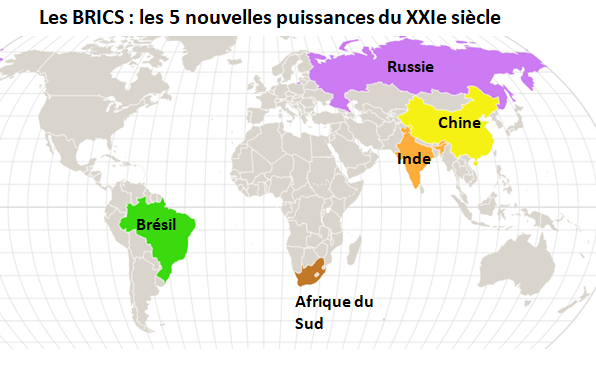

Le concept de BRICS trouve son origine en 2001, lorsque l’économiste Jim O'Neill de Goldman Sachs propose l’acronyme « BRIC » pour désigner quatre grandes puissances émergentes : Brésil, Russie, Inde et Chine.
L’objectif initial était d’identifier les pays capables de remodeler l’économie mondiale au XXIᵉ siècle grâce à leur croissance rapide, leurs ressources abondantes et leur influence géopolitique grandissante.
| Année | Événement |
|---|---|
| 2001 | Création du terme BRIC par Jim O’Neill (Goldman Sachs) |
| 2006 | Première rencontre informelle des ministres des Affaires étrangères |
| 2009 | Premier sommet officiel des BRIC |
| 2011 | L’Afrique du Sud rejoint → naissance du BRICS |
| 2023 | Extension vers le BRICS+ avec plusieurs nouveaux pays |
 Brésil : Le Brésil est un acteur majeur en Amérique latine, riche en ressources naturelles et en agriculture. Son inclusion a apporté au groupe un poids géopolitique sur ce continent.
Brésil : Le Brésil est un acteur majeur en Amérique latine, riche en ressources naturelles et en agriculture. Son inclusion a apporté au groupe un poids géopolitique sur ce continent.
 Russie : La Russie contribue par son influence politique, son rôle énergétique et ses capacités militaires. Elle permet au BRICS d’avoir un rôle stratégique sur la scène internationale.
Russie : La Russie contribue par son influence politique, son rôle énergétique et ses capacités militaires. Elle permet au BRICS d’avoir un rôle stratégique sur la scène internationale.
 Inde : L’Inde apporte une économie en forte croissance, une main-d’œuvre importante et un secteur technologique dynamique, contribuant à la compétitivité mondiale du groupe.
Inde : L’Inde apporte une économie en forte croissance, une main-d’œuvre importante et un secteur technologique dynamique, contribuant à la compétitivité mondiale du groupe.
 Chine : La Chine est le moteur industriel du BRICS. Sa puissance économique et commerciale permet au groupe de peser lourdement dans les échanges mondiaux.
Chine : La Chine est le moteur industriel du BRICS. Sa puissance économique et commerciale permet au groupe de peser lourdement dans les échanges mondiaux.
 Afrique du Sud : L’Afrique du Sud a été intégrée en 2011, renforçant l’influence du groupe sur le continent africain et ses marchés.
Afrique du Sud : L’Afrique du Sud a été intégrée en 2011, renforçant l’influence du groupe sur le continent africain et ses marchés.
| Pays | Population | PIB (milliards $) | Ressources principales |
|---|---|---|---|
| Brésil | 174 millions | 559 | Agriculture, énergie |
| Russie | 144 millions | 306 | Pétrole, gaz |
| Inde | 1,04 milliard | 480 | Technologie, services |
| Chine | 1,27 milliard | 1 339 | Industrie, exportations |
"Les BRICS représentent l’avenir de l’économie mondiale et un contrepoids aux structures traditionnelles." – Jim O’Neill
"L’intégration de pays émergents offre de nouvelles opportunités pour un monde multipolaire." – Banque mondiale
| Nom | Avis |
|---|---|
| Ali | Très informatif et intéressant. |
| Sarah | Présentation claire et utile. |
| Nom | Avis |
|---|---|
| Mohamed | Manque d'exemples concrets. |
| Linda | Section un peu longue. |